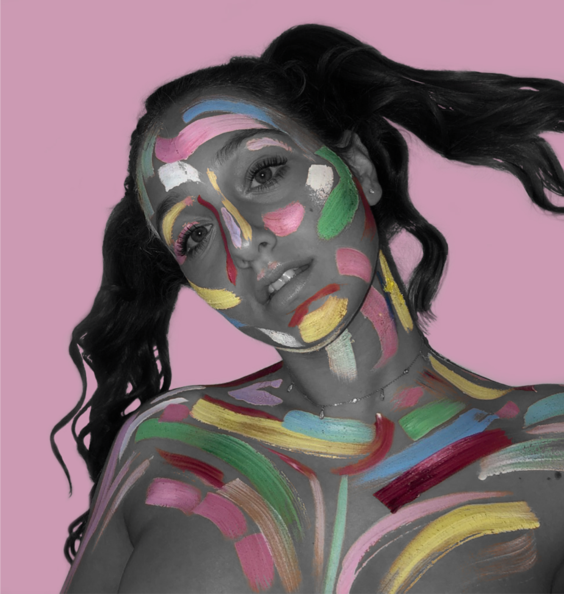

Alexandra Karakovskaya
I’ve always had a very normal relationship with technology, in school I wasn’t one of the “techy kids” that would help fix the promethean but I never really struggled with it either. I didn’t realize how little I actually knew about technology until coming to DIDI. I realized that I am actually not that technologically advanced at all. I struggled so much last year with softwares such as; rhino and illustrator. My frustration with technology probably stems from the fact that I am a very visual person, I like to paint, draw, doodle and express my thoughts on paper. So the concept of coding something visual is still mind blowing to me. Throughout this course my goal is to become more skilled at the technical aspects of multimedia and my biggest fear is coding. I have just begun to explore coding and it’s starting to make more and more sense to me, I am really looking forward to figuring it out. Another fear that I have is that I have a very unique personal style, I tend to use very specific color schemes often and I am afraid that I will struggle with designing things in a different style.

I’ve always been fascinated by Japan and Japanese culture. A few years ago I was lucky enough to have been able to travel to Japan on a school art trip. There we visited many galleries and so much of what we saw was colorful, imaginative, interesting and beautiful. On that trip I fell in love with Yayoi Kusama, she is a Japanese contemporary artist, she mostly makes interesting installations that include sculptures. She really inspires me because she has found her personal style and stuck to it. She explored her passions and became a very successful artist worldwide. I also find her especially inspiring because she helped me understand that sometimes something can just be beautiful and not necessarily have a function.